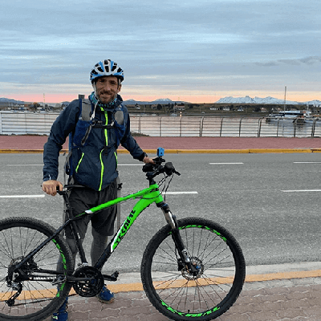
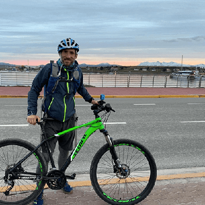

NOSOTROS SOMOS RUNCLUB
Empezamos como un grupo de amigos que le gusta correr y tras 10 años de experiencia nos convertímos en la empresa líder sobre Running en Argentina. Tenemos como misión brindar un servicio integral a todos los apasionados del running. Organizamos competencias de nivel internacional en todo el país, informamos sobre actualidad, novedades, lanzamientos y contamos con el running team más popular de Argentina.
STAFF
ÁLVARO GUZMÁN

El sub3. Diseñador y Maratonista. Ponele un objetivo y no va a parar hasta cumplirlo. Responsable de la creatividad.
SANTIAGO OLIVIERI

Mr. Ultra. Especialista en correr montañas y rutas. Organizador y coordinador de cada uno de nuestros eventos.
GONZALO REY

El colo. El ordenado, ultra maratonista versátil. Coordinador de equipos de nuestras actividades.
MARIANO TABANERA

El señor montaña. Nuestro guía en las carreras de aventura y especialista en todas nuestras novedades.
NUESTRA GALERÍA
Aquí te compartimos una galeria con nuestras mejores aventuras
 
